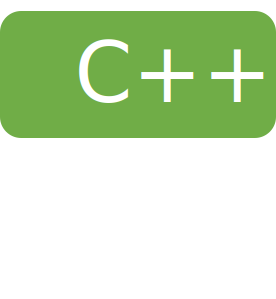
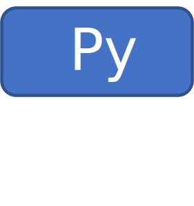
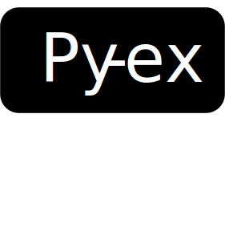
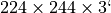

Demos#
HElayers demonstrates several end-to-end use cases that are implemented through a series of stand-alone tutorials.
In most cases, the tutorials assume the involvement of two parties: a data owner and an untrusted server. To simplify the process and facilitate learning, these tutorials run both the data owner and untrusted server parts on the same machine. Communication between them is achieved through files. However, if desired, HElayers users can separate these parts and deploy them on different machines. In such cases, users will need to implement a mechanism for transmitting files or replace the I/O API to utilize sockets or other communication methods instead of files.
Most demos are available in three forms:
As C++ code examples using the library’s C++ API. Such demos are marked with .
As a Jupyter notebook using the library’s Python API. Such demos are more descriptive and are designed to explain a given concept. Such demos use the  tag.
As a Python snippet using the library’s Python API. Such demos are less descriptive and intend to provide a fast code example that can be used by HElayers users. Such demos use the  tag.
The demos use three backends: HEaaN, HElib, and SEAL. For most demos it is easy to switch between different backends, and explore which works best in each case.
Running the tutorials
To run the tutroials, see the instructions on the installation page.
Tutorials#
Use cases based tutorials#
Tutorial name |
Tags |
Description |
|---|---|---|
Credit card fraud detection using neural network inference |
|
The network’s architecture is an FHE-friendly variant of a network implemented by the Kaggle community (see also other resources). The network was trained using a realistic dataset taken from Credit Card Fraud Detection. This dataset contains actual anonymized transactions made by credit card holders from September 2013, and is labeled for transactions being fraudulent or genuine. The server works with both network and incoming data encrypted. Can be configured for throughput or latency, reaching a maximum of 4000 samples per second throughput on a benchmark machine (see below), or minimal latency of 0.5 second (including I/O and encrypt/decrypt time). |
Credit card fraud detection using a decision tree |
The decision tree was trained in the clear on the same data set as above. The server performs classification when both tree and incoming data are encrypted. |
|
Heart disease detection using neural network inference (resources) |
||
COVID-19 predictions using encrypted CT scans |
Each image is  pixels, and the prediction is done using a 5 layer convolutional neural network. |
Machine Learning tutorials#
Inference tutorials#
Tutorial name |
Tags |
Description |
|---|---|---|
ARIMA prediction |
|
ARIMA model training and prediction on encrypted data. |
Linear regression inference |
|
Compute a linear regression model inference over a batch of input vectors |
Logistic regression inference |
|
Compute a logistic regression model inference over a batch of input vectors |
Kmeans inference: compute the nearest centroid for a set of input vector |
|
The Euclidean distances are computed under encryption, and the final arg-min computation is done in post-processing on the client side |
MNIST classification |
A known HE network inference benchmark architecture CryptoNets <user/resources:neural network architectures>, used for classifying images of digits. The network has a convolution layer, followed by two fully connected ones. The server works with both network and incoming data encrypted. Can be configured for throughput or latency, reaching a maximum of 4400 samples per second throughput on a benchmark machine (see below), or minimal latency of 0.7 second. |
|
Image classification using an HE friendly modified version of AlexNet, SqueezeNet or ResNet-18 |
It computes inference over a single 50K RGB pixel encrypted image in 3.5 minutes (AlexNet) with a non-encrypted model on a 88-CPU threads machine. |
|
Prediction over the Iris dataset using an XGBoost model |
First, an XGBoost model is trained in the clear. Then, the trained model is encrypted and used to run prediction over encrypted test samples from the iris dataset. For now, the FHE XGBoost model is programmed to maximize throughput, which may come at the account of higher latency. A latency minimization support may be added in future versions. |
|
Text classification |
|
This tutorial is based on the Newsgroups dataset and classifies a text snippet to its relevant category. The tutorial includes training the neural network model in the clear, then performing inference under encryption. The tutorial uses only 4 out of the 20 available categories. |
Training tuorials#
Tutorial name |
Tags |
Description |
|---|---|---|
Logistic Regression Training on a Credit Card Fraud Detection Dataset |
A demo demonstrating the training of a logistic regression encrypted model under HE using an encrypted dataset of credit card transactions. The trained model is used to run inference on encrypted samples. |
|
Completely Random Forest training over encrypted data |
A demo demonstrating the training process of a Completely Random Forest model with encrypted samples from UCI’s Adult dataset. |
Databases tutorials#
Tutorial name |
Tags |
Description |
|---|---|---|
Database query |
|
Several demonstrations of various techniques to query an encrypted database. We show a unique select demo over a database encrypted with BGV, and more general tools for doing encrypted queries for count, sum, average and standard deviation, conditioned on either equality or greater-than operators, using the CKKS scheme (the CKKS demo is in C++ only). The server sees nothing except the names of the columns being queried and the type of condition (equality or greater-than, etc…). |
Low-level APIs tutorials#
Tutorial name |
Tags |
Description |
|---|---|---|
FHE basics (HEBase) |
The tutorial provides basic usage example of the HEBase layer of HeLayers. |
|
Tile tensor API tutorial |
Two demos demonstrating the pyhelayersext API, which offers easy integration with scikit-learn/keras libraries. We add a single import instruction to a regular training and testing script, and it replaces scikit-learn/keras predictions with the FHE implementation. The FHE configuration details are taken from fhe.json configuration file. |
|
MLToolbox demonstration |
Using MLToolbox to convert a general NN model into an FHE-Friendly NN model with nearly the same performance, that can later be encrypted and used for prediction on encrypted data. |
|
A demo of use of a multi-party FHE setting |
|
In this setting, a set of parties wish to compute some function over their secret data while not revealing it to any of the other parties. Using a regular public-key setting will not be secure, since it requires the parties to trust the holder of the secret key (whether it is one of the parties or a “trusted” third party). In the multi-party FHE setting, none of the parties has a hold on the secret key. Instead, each party has its own secret key (therefore, it will also be called a “key-owner” later on). The public keys (which includes the encryption key and the evaluation keys) are generated in a initialization protocol (a.k.a InitProtocol) between the parties. To decrypt a ciphertext, each of the parties (key-owners) needs to give its consent and to take part in a decryption protocol (a.k.a. DecryptProtocol) |
CircLayer tutorial |
A demo of low level optimization achievable by examining the computation circuit. |
|
Bitwise tutorial |
A tutorial of HEbase’s API for bitwise scheme |
HE utiltiies tutorials#
Tutorial name |
Tags |
Description |
|---|---|---|
Calculation of one-hot encoding under homomorphic encryption |
One-hot encoding converts a number 1-n to a vector of n 0-1 indicators. Given an encrypted input vector of numbers and a vector of possible values that the input vector might contain, we calculate a set of encrypted indicator vectors. Each indicator vector corresponds to a different possible value and contains 1 in the slots where that value appears in the original vector. |
|
A demo of Private Set Intersection (PSI) process between three parties to be used for Vertical Federated Learning (VFL) |
|
PSI is the process of finding common entries in two datasets or more without disclosing any information about the data. In VFL the dataset is paritioned “vertically” between the parties, meaning that each party holds different features of some subset of the samples, while each sample is identified by a unique UID. Given list of UIDs and the partial dataset of one of the parties, the objective is to calculate an encrypted dataset that contains only the samples that appear also in the datasets of the other parties, and do so without disclosing any information to each of the parties. |
Other tutorials#
Tutorial name |
Tags |
Description |
|---|---|---|
Entity Resolution (ER) |
|
identifying different records that refer to the same entity, and then handling the identified records as needed. The example demonstrates a specific case of ER, namely Record-Linkage (RL), that deals with identifying records in different databases which refer to the same entity. Our ER library performs such Record-Linkage in a privacy-preserving manner (PPRL) without using FHE. |
Conway’s Game of Life |
This demo showcases the capabilities of using a noise cleanup procedure in the CKKS scheme. By employing this procedure, deep computation of Conway’s Game of Life becomes possible for unlimited rounds. The computation involves numerous bootstrapping operations, which are executed flawlessly without introducing any errors compared to the plaintext version of the computation. In contrast, without the cleanup procedure, the computation fails after only a few rounds. This demo is based on the BLEACH paper |